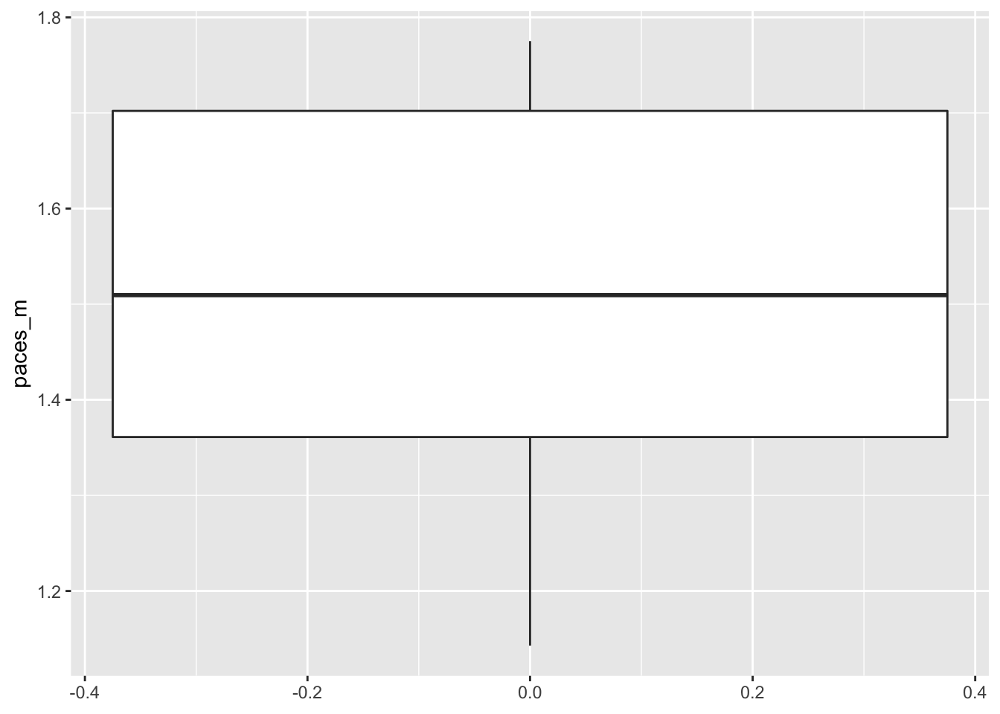

I had to organize the Tenderfoot scouts in my troop to learn some orienteering. The first step is to calculate how long their paces are. We went to the track and measured their pace count per 100 meters at least twice per scout. I wondered what the distribution looked like.
I used dplyr method to group and summarize the data. It’s a little overkill but it does make it super easy. It looks like the median length of a pace is just about 151 cm, with a mean of pretty much the same thing.
library(googlesheets)
suppressPackageStartupMessages(library(dplyr))
library(ggplot2)# Change cache flag to F if updating data
my_sheets <- gs_ls()
fb <- gs_title("BoysPaces")## Sheet successfully identified: "BoysPaces"x <- gs_read(fb)## Accessing worksheet titled 'Sheet1'.## Parsed with column specification:
## cols(
## Name = col_character(),
## paces_per_100m = col_double()
## )x <- as_tibble(x)
x## # A tibble: 23 x 2
## Name paces_per_100m
## <chr> <dbl>
## 1 SK 87
## 2 SK 80
## 3 LL 75
## 4 LL 76
## 5 ED 68
## 6 ED 65
## 7 KF 66
## 8 KF 66
## 9 BL 55
## 10 BL 59
## # ... with 13 more rowsx %>% group_by(Name) %>%
summarize(mean_paces_per_100m = mean(paces_per_100m)) %>%
mutate(paces_m = 100/mean_paces_per_100m,
paces_ft = 328.084/mean_paces_per_100m)## # A tibble: 10 x 4
## Name mean_paces_per_100m paces_m paces_ft
## <chr> <dbl> <dbl> <dbl>
## 1 BL 56.3 1.78 5.82
## 2 BL2 57 1.75 5.76
## 3 CC 58.7 1.70 5.59
## 4 ED 66.5 1.50 4.93
## 5 EJ 87.5 1.14 3.75
## 6 KF 66 1.52 4.97
## 7 LL 75.5 1.32 4.35
## 8 SK 83.5 1.20 3.93
## 9 VC 68 1.47 4.82
## 10 VM 59 1.69 5.56x %>% group_by(Name) %>%
summarize(mean_paces_per_100m = mean(paces_per_100m)) %>%
mutate(paces_m = 100/mean_paces_per_100m) %>%
ggplot(aes(y = paces_m)) + geom_boxplot()
x %>% group_by(Name) %>%
summarize(mean_paces_per_100m = mean(paces_per_100m)) %>%
mutate(pace_length_m = 100/mean_paces_per_100m) %>%
summarize(median_pace_length = median(pace_length_m))## # A tibble: 1 x 1
## median_pace_length
## <dbl>
## 1 1.51x %>% group_by(Name) %>%
summarize(mean_paces_per_100m = mean(paces_per_100m)) %>%
mutate(pace_length_m = 100/mean_paces_per_100m) %>%
summarize(mean_pace_length = mean(pace_length_m))## # A tibble: 1 x 1
## mean_pace_length
## <dbl>
## 1 1.51